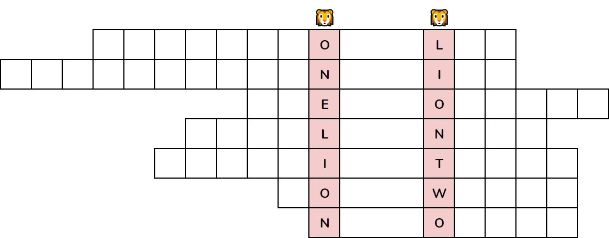

What Have We Learned?
Puzzles are, generally, fairly tricky things, and they often require you to stretch your mind in some creative ways. But at least you had your partner with you through the experience! Maybe, between the two of you, you've picked up some new skills.
What has this puzzle hunt taught you to do?

This is a metapuzzle. It makes use of the answers to the other puzzles. You'll probably want to solve some of those other puzzles first, then come back to this one. (We recommend you solve 5-7 of the other puzzles first before attempting the metapuzzle.)